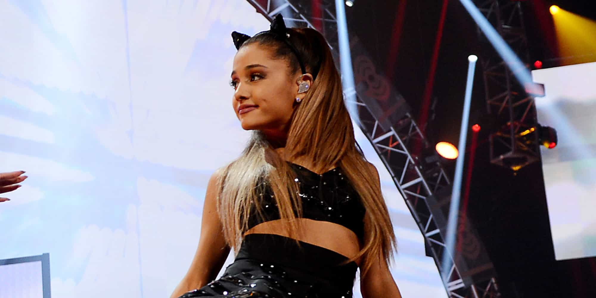

< < < Back
Ariana Grande Sexualizes Her Entire Image For Years Then Demands People “Focus On The Music” – Return Of Kings
Singer Ariana Grande recently released an “essay” claiming that she is being objectified and oppressed by the all-encompassing patriarchy. She said was irate about the supposedly constant references to her as Big Sean’s ex, amidst her general opining about “misogyny,” “sexism,” and “double standards,” and a reference to feminist Gloria Steinem.
“Focus on my music!” is what her piece screamed, all while she continues to cloak herself in female caricatures and stereotypes labeled as sexist when men enjoy them: cat’s ears, corsets, prancing around in her underpants, and generally selling her body to sell albums. Nothing in the piece mentioned the excessive photoshopping of her on magazine and album covers, either, or an obsession with cosmetics that body image experts blame for rampantly low female self-esteem amongst the general population.
It has never been about Grande’s music because a) men typically write her songs entirely or contribute most of the lyrics and composition and b) many people can sing as well as or better than Grande. What Grande sells instead to the public is her body, perceived looks (but I’ll pass, thanks) and youth.
If you want the best singer, or at least one better than Grande, you would end up, probably, with an overweight opera singer or another girl, a rather “homely” one, who switched to pop.

If a man ogles this sort of image on a magazine cover, it’s considered sexist. When a woman creates this image of herself on the way to earning tens of millions of dollars, it’s considered “independent.”
Grande’s diatribe has nothing to do with double standards or “misogyny” and everything to do with celebrity culture. Celebrities are paid truly exorbitant amounts to plaster themselves across our collective social consciousness, without usually contributing anything that isn’t superficial or which doesn’t endorse narcissism.
One of the drawbacks of this massive remuneration and adoration for a person with a net worth well beyond $10 or $100 million is a menagerie of press representatives wanting a piece of their private life all the time.
I have no problem with Grande, like Kate Upton, using sexualization as a tool in her career. But the rest of us need to call a spade a spade. It becomes tedious when Grande robotically describes herself as a sexualized object and alleged “property” of a man when her entire public persona is predicated on her overt and inveterate sexualization. Her success as a performer is attributable to this fact alone.
Grande is not so special a celebrity
Take George Clooney, a much more high-brow celebrity despite his politics, as a case in point. Between 2005 and 2012, he starred in, co-wrote, directed or produced films which garnered him eight different Academy Award nominations across six different categories. Two of these nominations resulted in wins, one for Best Supporting Actor in Syriana and another for Argo being Best Picture.
He additionally received critical acclaim for other performances outside his recognition by the Academy of Motion Picture Arts and Sciences. One is hard pressed to name another film icon with a similar critically prolific and versatile track record over the past decade, with the exception of Clint Eastwood.
Most of the time, though, attention has been lavished much more on George Clooney’s love life and other female entanglements. Grande might argue that she’s the victim of double standards because of her genitals, but it doesn’t explain how men like Clooney are routinely invoked only to describe romantic partners and their “work” outside work.
Intrusion into one’s private life is part and parcel of the celebrity tradeoff for both men and women. Look at the litany of male stars who have legally detrimental encounters with paparazzi. They’re not accosted when they’re on-set and security could efficiently dispose of the photographers. It happens on their downtime, when they’re hand-in-hand with their latest sweetheart or frolicking shirtless at the beach.
Claiming feminism earns you big bucks

Classy Beyoncé in her empowered woman pose
The appropriation of feminism or other ideologies by already multimillionaire female (or male) celebrities continues to generate financial windfalls for them. Lady Gaga, for example, has established herself as the preeminent campaigner for gay marriage and other LGBT causes.
I do not doubt that she legitimately believes in what she says, but you still can’t ignore the phenomenal remunerative benefits it has brought her. Being a “gay icon,” a largely straight one who says she’s bisexual and is engaged to a man, equals a gay and leftist following that fills her bank accounts even more.
It’s also rooted in an intrinsic mythology, as it allows these people to present the veneer of suffering the same slights and misfortunes of the common person. This is because celebrity status relies on a complex fusion of being both “above” the masses but “like” them. The ultimate victory of the celebrity is being idolized like a modern-day religious figure but being lauded as “down-to-earth”.
Although more implicit than other songs, Beyoncé’s Single Ladies (Put a Ring on It) (ironically written with three men) is meant to channel the “girl power” of independent women. This presupposes that the situation of, say, lower middle-class women could be in any sense like Beyoncé’s. It’s akin to me comparing my next pangs of hunger to a child in the economically and politically failed state of Somalia.
Finally, and related to the second point, it enables those who are fundamentally privileged to fend off accusations that they are part of any elite that should give back more. Because of “patriarchal superstructures,” women with a phenomenal net worth like Beyoncé can lump themselves in amongst the traditional stereotypes of oppressed women. The male gas station attendant has male privilege; Beyoncé is “objectified” and asserting her girl power to fight it.
Basically, if a female celebrity doesn’t like a form of attention or criticism, she can call it sexism. Male celebrities lack such a jack-of-all-trades, please-get-away-from-me card.
It isn’t even Ariana Grande’s music most of the time
Male musicians and songwriters like Malcolm McCormick, known as the rapper Mac Miller, have written most of Grande’s songs.
It’s suitably quaint that Ariana Grande portrays herself as a victim of sexists not focusing on her music when much of that music she doesn’t write herself. A half dozen others, including men, wrote “her” number one hit from Yours Truly, called The Way. Only five of the 13 songs were co-written by her for this debut album.
Break Free, another number one from the follow-up album My Everything, was written by three men and Problem was written by Grande (finally!), Iggy Azalea and three men.
Fact Alert: Pop and many other genres are about the external appearance and persona of the singer or group, not the music. Female pop itself is invariably the marriage of soft pornography via a trim body and a voice that’s hopefully at least semi-decent.
Independent women who objectify themselves and rely on men
Get the men to write your songs for you and then they’re yours. Dress up in a way seen as misogynistic when men want women to look like that. This is all in a day’s work for Ariana Grande. Her hypocrisy knows no bounds. The command to “Look at me! Look at me!” combines very elegantly with the shrill politicking and opportunism of Grande claiming she is a victim.
The solution to this excremental situation is simple, unrelenting juxtaposition. Compare what feminists and others describe as the objectification of women by men and “society” with the identical self-presentation of unfathomably wealthy celebrities like Grande and the desperate regular girls emulating them.
Challenge the primitive assumption that “male privilege” allows any woman, no matter how elite, wealthy or advantaged in other ways, to claim the mantle of universal victimhood.
In the end, the Ariana Grandes of the world always expose themselves for the discerning and intelligently skeptical to see.
Read More: Woman From MTV Demands Free Stuff From Us